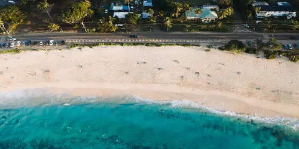

Cape Verde

Imagem de wirestock no
Freepik
Data
Area: 1557 sq ml
Population: 593.149
Capital: Praia
Language: Portuguese, Cape Verdean Creole
Currency: Cape Verde Escudo
Time Zone: UTC-1
Calling Code: +238
Internet TLD: .cx
Weather
Temperature: 28°C
Conditions: Sunny
Wind: 22 km/h